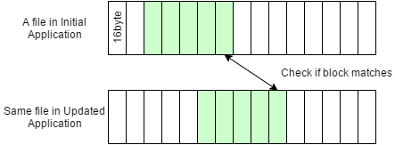
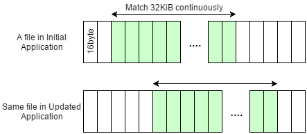

このページでは、NX のパッチで提供するファイルの部分パッチを効果的に使う、つまりはパッチのサイズを小さくするのに必要な情報を記載します。一部、初版アプリケーションを作成する時点から注意しておく必要がある情報を含みます。
NX のパッチは、概念的には、変化がないデータは初版アプリケーション側から読み込むという仕組みになっています。ファイルの部分パッチを利用する条件は、初版アプリケーション側のデータを参照するための条件、と考えることができます。
参照可能な初版アプリケーション側のデータを探すことを、ここではバイナリマッチングと表現します。パッチの作成は、初版アプリケーションと修正版アプリケーションを入力としてバイナリマッチングを行い、参照先が見つからなかったデータをパッチとしてまとめる処理と考えることができます。
下記の条件を満たすとき、バイナリマッチングが成功し、初版アプリケーション側のデータを参照することができます。


少しわかりづらいため、例を用いて説明します。
初版のファイルと修正版のファイルとで、ある区間がバイナリレベルで一致しているときに、NX のパッチで初版アプリケーション側のデータを参照できるか、で考えます。
| 一致区間のサイズ | 初版でのオフセット | 修正版でのオフセット | 初版ファイルを参照する区間 | 説明 |
|---|---|---|---|---|
| 32KiB | 16KiB | 16KiB | 16KiB から 32KiB 分 | 32KiB 以上連続しているので、参照可能です。 |
| 32KiB | 16KiB | 20KiB | 16KiB から 32KiB 分 | 16Byte 単位のファイル内オフセットのずれは検知できるため、参照可能です。 |
| 32KiB | 16KiB | 0Byte | 16KiB から 32KiB 分 | 前方向にずれた場合も検知できるため、参照可能です。 |
| 32KiB | 16KiB | 20KiB + 8Byte | 参照不可 | 8Byte ずれた場合、16Byte のブロックに区切ると一致しないため、検知できません。 |
| 16KiB | 16KiB | 20KiB | 参照不可 | 一致区間が 32KiB に満たないため、参照できません。 |
| 32KiB | 16KiB + 8Byte | 20KiB + 8Byte | 参照不可 |
先頭の 8Byte および終端の 8Byte は 16Byte ブロックで考えたときには一致しません。 そのため連続して一致するサイズが 32KiB に足りず、参照できません。 |
| 32KiB + 16Byte | 16KiB + 8Byte | 20KiB + 8Byte | 16KiB + 16Byte から 32KiB 分 |
上の例では 32KiB に届かないため参照できませんでしたが、一致区間がもう 16Byte あれば参照できるようになります。 |
| 128MiB | 16MiB | 20MiB | 16MiB から 128MiB 分 | 一致区間のサイズは 32KiB 以上も可能です |
| 128MiB + 16Byte | 16MiB | 20MiB | 16MiB から 128MiB + 16Byte 分 | 参照する区間のサイズは、32KiB 以上かつ 16Byte の倍数が可能です。 |
一致する区間の順番は、初版アプリケーションと修正版アプリケーションとで同じである必要はありません。例えば下記のように一致するアドレスが前後している場合でも、どちらの区間も初版アプリケーション側を参照できます。
| 一致区間のサイズ | 初版でのオフセット | 修正版でのオフセット | 初版ファイルを参照する区間 |
|---|---|---|---|
| 32KiB | 16KiB | 64KiB | 16KiB から 32KiB 分 |
| 32KiB | 128KiB | 16KiB | 128KiB から 32KiB 分 |
ここでは、複数リソースを 1 ファイルにアーカイブ化している場合に、パッチサイズを小さくする対応例を説明します。
先ほど説明した「部分パッチを利用する条件」を満たしやすくするための方法と考えてください。
変更ないリソース (32KiB 以上) が初版アプリケーション側を参照できるようにするために、そのリソースを配置するファイル内オフセットは 16Byte アライメントを取っておくとよいです。
アライメントを取らない場合、そのリソースのファイル内オフセットが初版アプリケーションと修正版アプリケーションとで 16Byte の倍数以外のずれ方をし、初版アプリケーション側を参照できない場合が発生します。
バイナリデータとしては若干の修正であっても、圧縮を行うと基本的には異なるバイナリデータとなります。そうなると、NX のパッチの仕組みでは差分で検出はできず、修正後のデータを丸ごとパッチに抱え込むことになってしまいます。
可能であれば、できるだけ細かい単位で圧縮を行うようにすることで、パッチのサイズを小さくすることができます。
例えば各リソースごとに圧縮を行ったうえでアーカイブをするのであれば、修正したファイルのみ差分が検出されることになります。一方アーカイブ化したものを最後に圧縮した場合、基本的には全域が差分として検出されてしまいます。